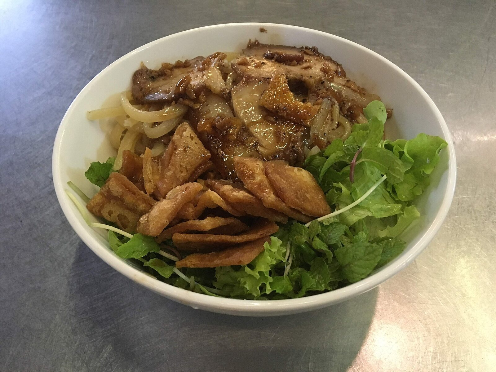
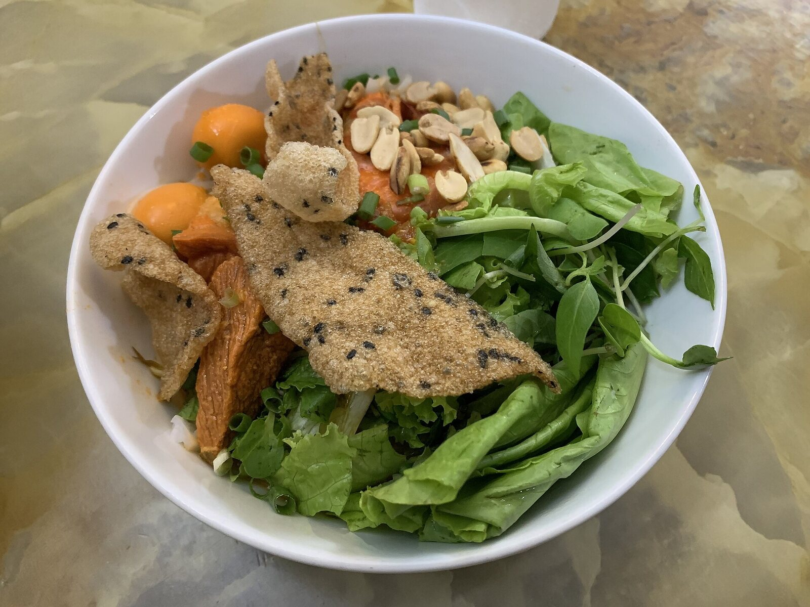

Tiếng Việt
Tiếng Việt English
English 한국어
한국어 中文
中文 Русский
Русский Deutsch
Deutsch
人们常说，想了解一个地方，就从一顿饭开始。会安正是最好的证明。作为曾经繁华的贸易港口，日本、中国和欧洲商人往来不绝，会安在美食中保留了数百年的文化交融痕迹。本文介绍十道值得一尝的美食、地道的享用方式，以及在CGP豪华酒店内的餐饮体验。
会安美食为何特别？
会安菜并不繁复，却在每个细节上都很讲究。成就其独特风味的三个要素是：本地食材、文化交融以及搭配生香草的吃法。
茶桂香草
茶桂村的香草用泻湖海藻施肥，香气浓郁、回味微甜。几乎每道会安菜都配有生香草。
文化交融
高楼面、白玫瑰和馄饨，都带有曾在古港生活的外国商人留下的印记。
祖传配方
许多名店守着代代相传的配方，用古法烹制，只在固定时段售卖。
价格亲民
大部分街头小吃都很便宜，一天之内可以尝遍多种美味。
10道必尝美食
1. 高楼面
如果在会安只能吃一道菜，那就选高楼面。金棕色的面条劲道略脆，以井水和草木灰按传统方法制作。一碗高楼面有面条、薄切叉烧、酥脆猪油渣、焯过的豆芽、茶桂香草和少许浓郁酱汁。它不像汤面，汤汁很少，吃前拌匀即可。
 图片: Chainwit. / Wikimedia Commons, CC BY 4.0
图片: Chainwit. / Wikimedia Commons, CC BY 4.0
图片: Christophe95 / Wikimedia Commons, CC BY-SA 4.02. 会安鸡饭
会安鸡饭与其他地方的鸡饭不同。米饭用鸡汤和黄姜煮成，金黄松软、香气扑鼻。土鸡煮得恰到好处，手撕后与洋葱、越南香菜和调料拌匀，配上腌菜、一小碗汤和少许辣酱。这道菜也在CGP餐厅的菜单上，在酒店就能品尝。

3. 广南面
广南面是整个广南地区的代表美食。宽扁的面条有白色或黄色，浇上少许用虾、猪肉、鸡肉或黑鱼熬的浓汤。撒上烤花生，配掰碎的烤米饼和生香草食用。广南面的汤汁通常只够浸润面条。

图片: Chainwit. / Wikimedia Commons, CC BY 4.04. 越南法棍面包
会安的法棍面包闻名世界，外皮酥脆、内里松软，馅料丰富：肝酱、火腿、烤肉、鸡蛋、香草和各家特制酱汁。古镇里一些面包店门口总排着长长的游客队伍。至少尝一次，也别忘了问问店家有什么特别的馅料。
 图片: Chainwit. / Wikimedia Commons, CC BY 4.0
图片: Chainwit. / Wikimedia Commons, CC BY 4.0
5. 白玫瑰
这道点心被称为"白玫瑰"，用透明米皮包入虾或猪肉馅，捏成小花形状。蒸熟后撒上酥脆炸葱，蘸酸甜鱼露食用。清淡雅致，非常适合当午餐。
 图片: Chainwit. / Wikimedia Commons, CC BY 4.0
图片: Chainwit. / Wikimedia Commons, CC BY 4.0
6. 馄饨
会安馄饨有汤馄饨和炸馄饨两种。炸馄饨香脆，上面浇有虾、肉和蔬菜做成的酸甜酱汁，是很受欢迎的夜宵小吃。
7. 越南煎饼与芥菜卷
越南中部的煎饼比南部小，外皮酥脆，内有虾、肉和豆芽。用米纸包上生香草，蘸浓郁的花生酱汁食用。芥菜卷是把小春卷包在青芥菜叶里，蘸酸甜鱼露吃。
8. 锦南玉米甜汤
锦南村的玉米香甜软糯，与浓郁椰奶一起煮成甜汤。傍晚在怀河边来一碗冰凉的玉米甜汤，是地道的会安体验。
9. 桥蒙烤小牛肉
金黄的烤小牛肉切成薄片，用米纸卷上生香草、青香蕉和杨桃，蘸鳀鱼酱或豆酱食用。常在小酌或与朋友午餐时享用。
10. 草本凉茶"沫水"
在古镇里能看到许多卖"沫水"的摊位，这是一种用柠檬叶、香茅、肉桂和水果调制的草本饮料，非常清凉。是在烈日下走了很久后最理想的解暑饮品。
在哪吃、何时吃？
会安美食在一天中有自己的节奏。知道什么时间吃什么，就能吃到最好的一餐。
- 清晨
广南面、法棍面包、咖啡
许多广南面和面包店一早就开门。住在CGP的话，酒店早餐已经很丰盛，但骑车途中买个法棍面包也很有乐趣。
- 中午
鸡饭、高楼面、白玫瑰
这是鸡饭和高楼面店最热闹的时段。早点去可以避免排队。
- 下午
甜汤、沫水、糕点
下午是吃零食的时间：玉米甜汤、豆类甜汤、苎麻叶糕，或一杯冰凉的沫水。
- 晚上
夜市与河边小馆
晚上，河岸和夜市摆满小吃推车。可以尝尝烤米纸、炸馄饨和烤海鲜。
 图片: Alexkom000 / Wikimedia Commons, CC BY 4.0
图片: Alexkom000 / Wikimedia Commons, CC BY 4.0在CGP豪华酒店用餐
探索了一天街头美食后，有时您只想在酒店安静、干净地吃一顿好饭。CGP豪华酒店有多种选择，让您足不出户就能享受越南风味。
泳池漂浮早餐
装着糕点、新鲜水果和西瓜汁的藤编托盘漂浮在酒店泳池上。这是情侣们最喜爱的体验，也是绝佳的拍照背景。请至少提前一天向前台预订，以便厨房准备。


餐厅自助早餐
酒店餐厅位于一楼，绿植吊顶、黄色藤椅和色彩鲜艳的油画相映成趣。每天早上，自助餐台备有吐司、鸡蛋、香肠、火腿、新鲜蔬菜、西瓜、火龙果、芒果等时令水果，以及橙汁、西瓜汁、咖啡和茶。如需自助早餐，请在预订或入住时告知前台。
越南菜与西餐
CGP厨房供应越南菜和西餐，可在泳池边或餐厅用餐：金黄的会安鸡饭、配生香草和浓郁蘸酱的米线拼盘、酥脆炸饼、热腾腾的煎蛋法棍，以及配薯条的三明治轻食。菜单可根据口味或饮食需求调整，点餐时告诉我们即可。


花园咖啡馆
泳池旁绿荫棚架下的花园咖啡馆供应越南咖啡、橙汁、西瓜汁、水果茶和轻食。是下午看书或与朋友聊天的好地方。
给游客的用餐建议
点餐前先问价在没有明确价目表的店里，先问价格以免误会。会安的大多数摊主都很友善，乐于解释。
多点几样，每样少一点街头小吃便宜，可以点几道小菜与同伴分享。这样一趟旅行能尝到更多味道。
注意过敏许多菜含有花生、虾或鱼露。如有过敏，请告知摊主，或请酒店前台帮您写一张越南语提示卡。
不知从哪开始？问问CGP前台吧。我们的团队都是本地人，熟悉当地居民常去的好店，乐意在地图上为您标出来。
常见问题
高楼面和广南面有什么区别？
高楼面的金棕色面条劲道，配叉烧和油渣，汤汁极少。广南面面条宽扁，汤汁较多，配花生和烤米饼。
酒店提供素食吗？
提供。CGP厨房可根据素食或特殊要求调整菜品，请在点餐时告知。
漂浮早餐需要提前多久预订？
请至少提前一天向前台预订。
住宿套餐包含餐食吗？
所有住宿套餐都包含每日早餐。视套餐而定，还可能包含晚餐或下午茶，详情请见各套餐页面。